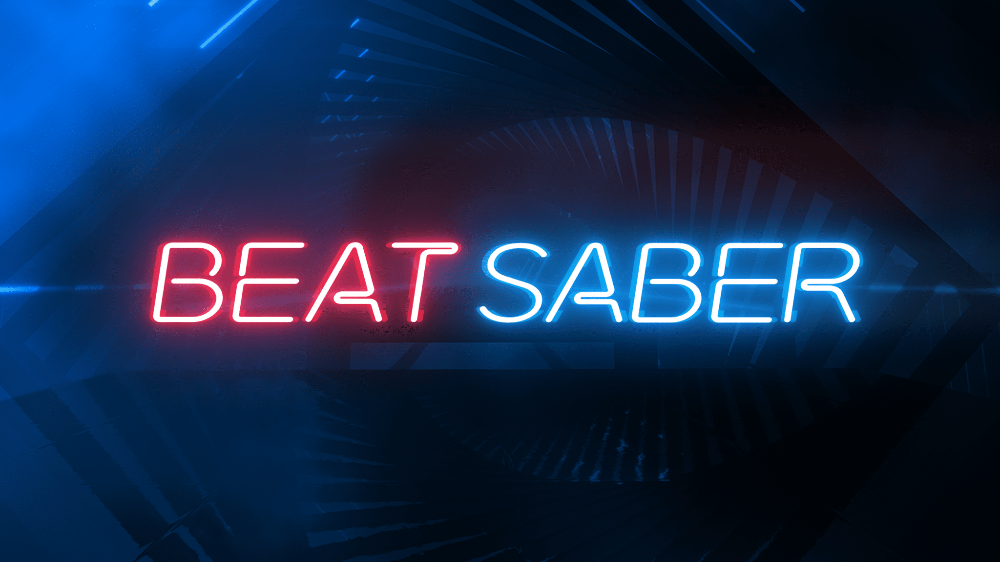

Favorite Games
|
#1 Legend of Zelda: Breath of the Wild

Legend of Zelda: Breath of the Wild, often abbreviated to 'botw,' is an open world adventure game for the Nintendo Switch and Wii U consoles. The game has a heavy focus on exploration giving the player a lot to do. The game puts a spin on the normal Zelda game because it doesn't have a set way of completing the story. The game drops you into this large would and says beat the boss, Ganon, with no explanation of how. This is why botw is my favorite game. There is no wrong way to play the game. It's up to the player to learn how to defeat Ganon, and with a map so large you can easily get lost in trying to find the answer. I love the game because of how vastly large it is, every time you play you learn or find something new easily getting lost in the world. |
#2 Pokémon HeartGold

Legend of Zelda: Breath of the Wild, often abbreviated to 'botw,' is an open world adventure game for the Nintendo Switch and Wii U consoles. The game has a heavy focus on exploration giving the player a lot to do. The game puts a spin on the normal Zelda game because it doesn't have a set way of completing the story. The game drops you into this large would and says beat the boss, Ganon, with no explanation of how. This is why botw is my favorite game. There is no wrong way to play the game. It's up to the player to learn how to defeat Ganon, and with a map so large you can easily get lost in trying to find the answer. I love the game because of how vastly large it is, every time you play you learn or find something new easily getting lost in the world. |
|
#3 Minecraft

Minecraft is a survival sandbox game with seemly no end. The game does have a final boss but allows you to continue playing after defeating it. This games potential is endless. Anything you can think of you can do in this game. I've played this game before its launch data in 2011 and I easily have thousands of hours playing this game. This is due to the sandbox element of the game. |
#4 Pokémon Platinum

Pokémon Platinum is a very simular game to Pokémon Heartgold, being the Pokémon game to come before Pokémon Heartgold. This game was a slight combination of the two Pokémon games that came before it that introduced the sinnoh region and started the fourth genertion of Pokémon, Pokémon Diamond and Pearl. This game holds its place in my top five a simular reason to Pokémon HeartGold which is natolgia. Since this game wasn't my first Pokémon game it doesn't hit the same way HeartGold does, however due to it arguably being a better game I still find myself time to time revisiting and playing the game. |
|
#5 Beat Saber

The only Virtual Reality game on this list is Beat Saber. Beat Saber is a rythm game where the goal is to cut blocks to the beat of a song. While the description of the game doesn't sound like the most enjoyable game in the world, once in the virtual reality wold of this game you quickly get emersed in the game. This game has a very addictive element of being an easy game to play but a hard game to master. I myself am a big fan of music and listen to it almost 24/7 so giving me an interactive way to listen to music will quickly have me hooked. |